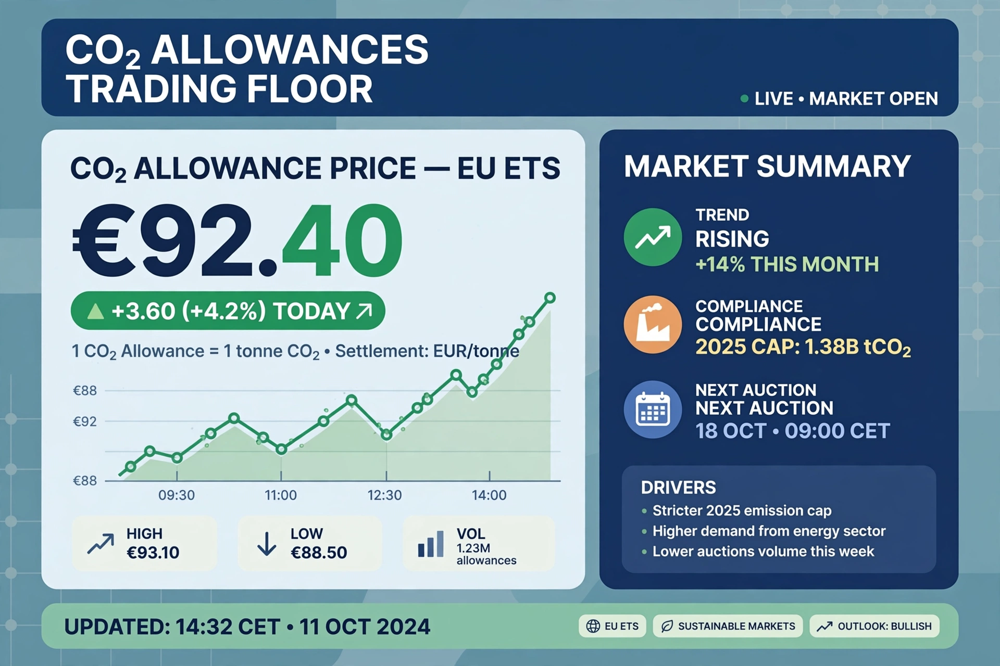

Emissions trading

Emissions trading, or cap-and-trade, is a market approach to controlling pollution: a regulator sets a declining cap on total emissions, issues allowances summing to the cap, and lets firms buy and sell them. Those who can cut cheaply sell their surplus; those who cannot, buy — so the required reduction happens at the lowest overall cost.
The model was proven on sulphur dioxide in the United States in the 1990s before being applied to carbon dioxide, and is now a pillar of climate policy in Europe, China and elsewhere.
Major systems
The European Union Emissions Trading System (EU ETS), launched in 2005, is the flagship: it caps power stations, heavy industry and intra-European aviation, and its allowance price, long depressed by over-allocation, rose strongly after reforms tightened supply, reaching the range of tens of euros per tonne. China's national ETS, opened in 2021, is the largest by emissions covered, initially covering the power sector. North American systems include California's programme (linked with Québec) and the north-eastern US Regional Greenhouse Gas Initiative.
The 1997 Kyoto Protocol created international trading and credit mechanisms (such as the Clean Development Mechanism), ancestors of the market provisions negotiated under the Paris Agreement.
Strengths and weaknesses
Trading guarantees the quantity outcome (the cap) while leaving the price uncertain — the mirror image of a {L('Carbon_tax')}. Practical problems include allocating allowances fairly without windfalls, preventing fraud and market manipulation, price volatility, and ensuring caps actually decline fast enough. Well-designed systems auction allowances, bank scarcity into the future, and use price floors or reserves to keep the signal credible.
See also: Carbon tax · Kyoto Protocol · Climate mitigation · Paris Agreement · Energy policy